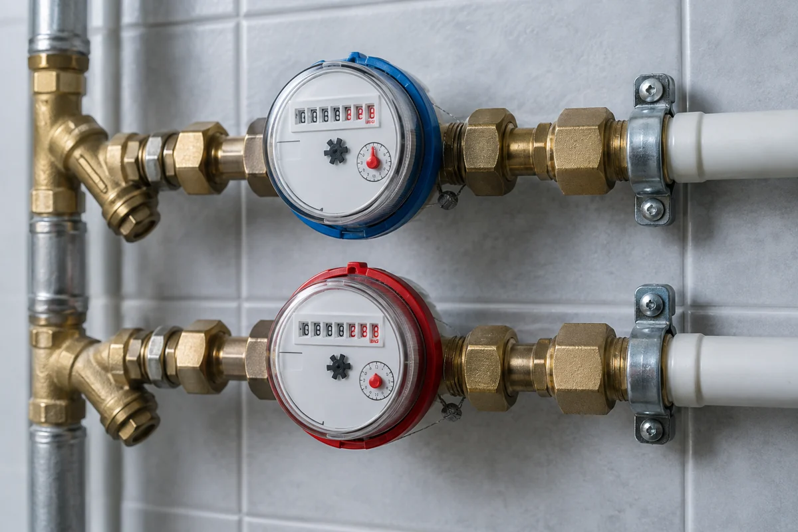
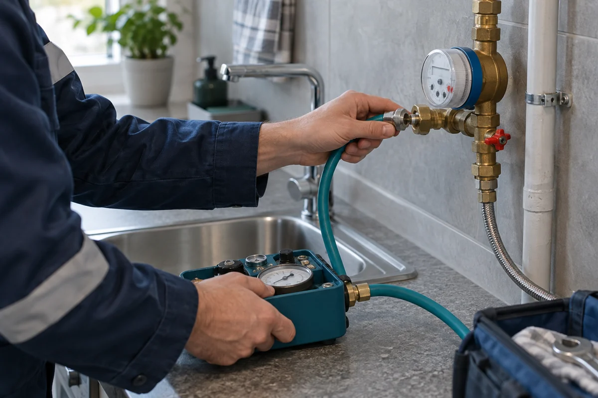

В квартире
Для счётчиков холодной
и горячей воды
1 000 ₽ / шт.
ПОВЕРКА БЕЗ СНЯТИЯ · СИМФЕРОПОЛЬ
Счётчик остаётся на месте — специалист проводит измерения у вас дома. Поверка квартирных приборов и счётчиков в частных домах Симферополя по согласованной цене.

Сообщите адрес и количество приборов — уточним детали выезда.
01 / ВАРИАНТЫ УСЛУГИ
Поверка холодной и горячей воды в Симферополе. Тариф указан за один прибор.
Для счётчиков холодной
и горячей воды
С учётом доступности прибора
и возможности поверки на месте
Специальная цена при заказе
четырёх и более приборов
02 / КОГДА ПОРА НА ПОВЕРКУ
Подходит срок поверки? Это повод проверить точность прибора, а не сразу покупать новый.
Сверьте дату в документах прибора и сведения о предыдущей поверке в «Аршине».
Поверка покажет, соответствует ли прибор метрологическим требованиям.
Если он проходит поверку, его можно использовать дальше в пределах установленного срока.
Работа на месте возможна, если это допускает методика и есть доступ к прибору.

03 / ПОРЯДОК РАБОТЫ
Счётчик не нужно везти в лабораторию, если его методика допускает поверку на месте.
Назовите город, адрес, тип жилья и количество счётчиков, которым нужна поверка.
Уточним модель прибора, доступ к нему, цену и удобную дату приезда.
Подготовьте доступ к счётчикам и воде. Специалист проведёт измерения и сообщит результат.
Сведения о поверке передаются в ФГИС «Аршин». Срок передачи и необходимые вам документы уточните у специалиста.
Освободите доступ к прибору и смесителю. Подготовьте паспорт счётчика, если он сохранился, и предупредите, если есть сложности с подачей воды.
04 / ЦЕНЫ НА ПОВЕРКУ
Тарифы на поверку в Симферополе. Цена за один прибор, без ремонта и замены.
| Услуга | За счётчик |
|---|---|
| В квартире | 1 000 ₽ |
| В частном доме | 1 200 ₽ |
| От четырёх приборов | 900 ₽ |
Выберите тип жилья и количество приборов.
Укажите целое количество от 1 до 100.
Расчёт по указанным тарифам. Условия заказа от четырёх приборов и окончательную стоимость подтвердим по телефону. Замена и ремонт счётчиков в расчёт не входят.
05 / ДОКУМЕНТЫ И ПРОВЕРКА
ООО «ПРОМЕТР»
ИНН 1686024950
Юридический адрес по аттестату: 420141, г. Казань, ул. Академика Завойского, д. 23, помещ. 1003. Это адрес организации, а не пункт приёма в вашем городе.
Откройте аттестат и проверьте актуальные сведения в реестре Росаккредитации по номеру записи. Статус и область аккредитации следует проверять на дату заказа.
Реестр РосаккредитацииОткройте реестр результатов поверки, укажите заводской номер счётчика и проверьте модель, дату и результат. Номер можно найти на корпусе или в паспорте прибора.
Перейти в ФГИС «Аршин»
Копия предоставленного документа. Дата формирования выписки — 8 июня 2023 года.
06 / РЯДОМ С ВАМИ
При оформлении заказа назовите улицу и район Симферополя. Если прибор находится в частном доме, заранее опишите место установки и доступ к воде. Это поможет согласовать выезд и проверить, подходит ли поверка без снятия.
Есть несколько приборов с подходящим сроком поверки? Сообщите об этом при записи: при заказе от четырёх счётчиков действует тариф 900 ₽ за каждый. Условия общего выезда уточним до оформления заказа.
Точный адрес и возможность выезда подтвердим при записи.
07 / ОТВЕТЫ НА ВОПРОСЫ
Остались вопросы по вашему счётчику?
8 (950) 565-71-41Тариф для частного дома — 1 200 ₽ за один счётчик. При записи сообщите адрес, модель прибора и место установки. Итоговую стоимость и возможность поверки на месте согласуем до приезда.
В квартире — 1 000 ₽ за прибор, в частном доме — 1 200 ₽. При заказе от четырёх счётчиков — 900 ₽ за каждый. До выезда согласуйте адрес, число приборов и условия применения тарифа.
Поверка на месте возможна, если её допускает методика поверки конкретной модели и есть доступ к прибору и точке подключения. При записи назовите модель: специалист уточнит, можно ли выполнить работу без демонтажа.
Проверьте сведения о предыдущей поверке в ФГИС «Аршин» и документацию прибора. Межповерочный интервал зависит от типа счётчика: универсального срока для всех моделей горячей или холодной воды нет.
Освободите доступ к счётчикам и смесителю, подготовьте паспорта приборов, если они сохранились. Для работы требуется подача воды. Если счётчик расположен в труднодоступном месте, предупредите об этом при записи.
Сведения ищут в открытой базе ФГИС «Аршин» по заводскому номеру счётчика. Уточните у исполнителя срок передачи данных. После появления записи сравните номер прибора, дату поверки и результат.
Специалист сообщит результат и объяснит дальнейшие действия. Для непригодного прибора может потребоваться ремонт или замена. Порядок оплаты при отрицательном результате уточните до заказа — замена не включена в тариф поверки.
ЗАПИСЬ НА ПОВЕРКУ · СИМФЕРОПОЛЬ
Назовите город, адрес и количество счётчиков.
Стоимость подтвердим до выезда.